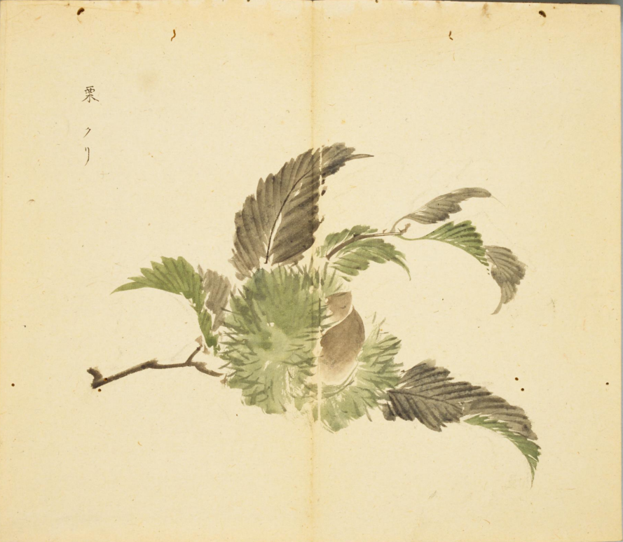

出现篇目
古代记载
《毛诗故训传》
栗，行上栗也。（《毛传》注《东门之墠》）
《毛诗正义》
正义曰：传以栗在东门之外，不处园圃之间，则是表道树也。故云“栗，行上栗”。行谓道也。襄九年《左传》云：“赵武、魏绛斩行栗。”杜预云：“行栗，表道树。”（《毛诗正义》疏《东门之墠》）
《本草纲目》
"《别录》曰∶栗生山阴，九月采。
弘景曰∶今会稽诸暨栗，形大皮浓，不美；剡及始丰栗，皮薄而甜，乃佳。
颂曰∶栗处处有之，而兖州、宣州者最胜。木高二、三丈，叶极类栎。四月开花青黄色，长条似胡桃花。实有房 ，大者若拳，中子三、五；小者若桃李，中子惟一、二。将熟则罅拆子出。栗类亦多。按∶陆玑《诗疏》云∶栗，五方皆有之，周、秦、吴、扬特饶。惟濮阳及范阳栗甜美味长，他方者不及也。倭、韩国诸岛上栗大如鸡子，味短不美。桂阳有莘栗，丛生，实大如杏仁，皮、子形色与栗无异，但小耳。又有奥栗，皆与栗同，子圆而细，惟江湖有之，或云即莘也。莘音榛，《诗》云“树之莘栗”是矣。 保升曰∶板栗、锥栗二树皆大。茅栗似板栗而细如橡子，其树虽小，叶亦不殊，但春生夏花、秋实冬枯为异耳。
宗奭曰∶湖北一种旋栗，顶圆末尖，即榛栗，象榛子形也。栗欲干收，莫如曝之；欲生收，莫如润沙藏之，至夏初尚如新也。
时珍曰∶栗但可种成，不可移栽。按∶《事类合璧》云∶栗木高二、三丈，苞生多刺如毛，每枝不下四、五个苞，有青、黄、赤三色。中子或单或双，或三或四。其壳生黄熟紫，壳内有膜裹仁，九月霜降乃熟。其苞自裂而子坠者，乃可久藏，苞未裂者易腐也。其花作条，大如箸头，长四、五寸，可以点灯。栗之大者为板栗，中心扁子为栗楔。稍小者为山栗。山栗之圆而末尖者为锥栗。圆小如橡子者为莘栗。小如指顶者为茅栗，即《尔雅》所谓 栗也，一名 栗，可炒食之。刘恂《岭表录》异云∶广中无栗。惟勤州山中有石栗，一年方熟，圆如弹子，皮浓而味如胡桃。得非栗乃水果，不宜于炎方耶？"

<细井徇>